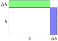

Previously, we noted that the derivative rules for \(\times\) and \(\div\) are much more complicated. We will address these rules in Section 12.1 and Section 12.2.
Section12.1Derivatives of Products
Remember from elementary school that the product \(h\cdot b\) is equal to the area of the rectangle with base \(b\) and height \(h\text{.}\)
Suppose now that we want the base or height to change over time. How does that change the area \(A = h\cdot b\) as a function of time? In other words, we want to know \(\dfrac{dA}{dt}\text{.}\)

Looking at the picture, there are two main parts of how the area is changing, as a result of the changing base (blue) and as a result of the changing height (green). There is also a little area in the upper corner, but it seems negiligible compared to the other changes.
More precisely you can prove that there are two parts to the rate of change in area
\(\frac{dA}{dt}\) due to changing base is equal to \(h\cdot \frac{d}{dt}[b]\)
\(\frac{dA}{dt}\) due to changing height is equal to \(b\cdot \frac{d}{dt}[h]\)
We don’t have any derivative rule for square roots, but we can always rewrite \(\sqrt[m]{x^n} = x^{n/m}\text{.}\) In particular, using \(\sqrt{x} = x^{1/2}\) gives us
To apply our derivative rules, you need to use order of operations (PEMDAS) to identify the "outermost" operation. In this case, our function is the product of \(x^{1/2}\) with \((9+7x)\text{.}\) That means we will use the product rule\(\D{\red{f}\cdot \blue{g}} = \red{f}\cdot \D{\blue{g}} + \blue{g}\cdot \D{\red{f}}\)
To apply our derivative rules, you need to use order of operations (PEMDAS) to identify the "outermost" operation. In this case, our function is the sum of \(3x\ln(x)\) and \(-4x\text{.}\) That means we will use the sum rule\(\D{\red{f} + \blue{g}} = \D{\red{f}} + \D{\blue{g}}\)
For the remaining derivative, we need to use PEMDAS to identify the "outermost" operation, which is a product, so we will use the product rule \(\D{\red{f}\cdot \blue{g}} = \red{f}\cdot \D{\blue{g}} + \blue{g}\cdot \D{\red{f}}\)
We want to take the derivative of a product, so we must use the product rule \(\D{\red{f}\cdot\blue{g}} = \red{f}\cdot\D{\blue{g}} + \blue{g}\cdot\D{\red{f}}\text{.}\) The problem is that here are only two functions in our formula, but there are multiplied terms in our definition of \(f\text{.}\) Fortunately, because of the “associativity” of multiplication \(a\cdot b\cdot c = (a\cdot b)\cdot c = a\cdot (b\cdot c)\text{,}\) so we can group the terms any way we like.
Now we have two derivatives remaining: a simple derivative \(\D{{\ln(x)}} = \frac{1}{x}\) and a product rule \(\D{{(5x^3\cdot e^x)} } = 5x^3 \cdot \D{e^x} + e^x\cdot \D{5x^3} = 5x^3 e^x + e^x\, 15x^2\text{.}\) Putting it all together we get
Any time a product is changing, the product rule comes into play. In business, products play an important role in the study of revenue and profit, since
Previously, we have only looked at the impact of changing quanitity. But in real economies, things like marketing can increase the quanitity sold over time without decreasing the price.
Exploration12.4.
Thanks to a word of mouth marketing campaign, business is booming. Suppose that
\begin{align*}
\text{quantity on day }t =\amp q(t) = 0.4e^t \\
\text{price on day }t =\amp p(t) = t^2
\end{align*}
How fast is Revenue changing on day 3?
Solution.
Before we can find any rates of change with respect to time, we first need to know what the revenue function is as a function of \(t\text{.}\) Using the formula
For the first derivative, we have a constant coefficent times a function, so we can use the rule \(\ddx{\red{c}\blue{f(x)}} = \red{c} \ddx{\blue{f(x)} }\text{.}\) For the second derivative, we can use the power rule \(\ddx{\blue{x}^{\red{m}}} = \red{m} \blue{x}^{\red{m}-1}\)
On the third day, the price is going up approximately 192.82 $/day.
In general, if price \(p(t)\) and quanity \(q(t)\) are both functions of \(t\text{,}\) then because the revenue function is
\begin{equation*}
R = q\cdot p
\end{equation*}
then the rate of change of revenue is
\begin{equation*}
\frac{dR}{dt} = q\cdot \frac{dp}{dt} + p \cdot \frac{dq}{dt}
\end{equation*}
In other words, the rate of revenue change has two parts: the change in \(R\) due to changing price (the first term), and the change in \(R\) due to changing quanity (the second term).
Section12.2Derivatives of Fractions
There is also a special rule for derivatives of fractions. Another name for a fraction is a quotient, so this is often called the quotient rule.
Theorem12.2.
Suppose that \(f(x)\) and \(g(x)\) are differentiable functions. Then
To apply our derivative rules, you need to use order of operations (PEMDAS) to identify the "outermost" operation. In this case, our function is the fraction of \(e^x\) and \(xx\text{.}\) That means we will use the quotient rule\(\left[\dfrac{\red{t}}{\blue{b}}\right]' = \dfrac{\blue{b}\cdot \red{t}' - \red{t}\cdot \blue{b}'}{(\blue{b})^2}\)
You can "show your work" in several ways. We have already seen the \(\ddx{\dots}\) strategy. This strategy is good because it is very robust, and almost always works. Unfortunately, this strategy also uses a lot of symbols.
An alternative technique makes a much greater use of scrap work. We will illustrate this strategy using the following exercise.
Exploration12.6.
Let \(f(x) = \dfrac{x^2 + x + 1}{x^2 -1 }\text{.}\) Find \(\frac{df}{dx}\text{.}\)
The outermost operation is a fraction, so we must use the quotient rule \(\left[\dfrac{\red{t}}{\blue{b}}\right]' = \dfrac{\blue{b}\cdot \red{t'} - \red{t}\cdot \blue{b'}}{(\blue{b})^2}\) with
\begin{equation*}
t = x^2 + x + 1
\end{equation*}
and
\begin{equation*}
b = x^2 - 1\text{.}
\end{equation*}
For the quotient rule, we need to subsitute expressions for \(t\text{,}\)\(b\text{,}\)\(t'\text{,}\) and \(b'\text{.}\) We already have expressions for \(t\) and \(b\text{.}\) We next do some "scrap work" to find \(t'\) and \(b'\)
The most important part of any derivative is to find the "outermost" operation. Here, we have a fraction where the numerator is \(x\ln(x)\) and the denominator is \(e^x\text{.}\) We must use the quotient rule. \(\left[\dfrac{\red{t}}{\blue{b}}\right]' = \dfrac{\blue{b}\cdot \red{t'} - \red{t}\cdot \blue{b'}}{(\blue{b})^2}\)
There are two derivatives in the expression above. The second expression is straightforward: \(\ddx{e^x}=e^x\text{.}\) The first derivative is more complicated is a product, so will require the product rule \(\ddx{\red{x} \blue{\ln(x)}} = \red{x}\ddx{\blue{\ln(x)}} + \blue{\ln(x)}\ddx{\red{x}} = x\frac{1}{x} + \ln(x)\cdot 1 = \green{1 + \ln(x)}\)